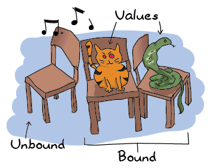

函数中的语法
模式匹配

我们现在有能力存储和编译我们的代码了，我们可以开始写更多功能的函数了。 到目前为止，我们已经写了一些简单但令人印象深刻的函数。下面我们将写一些更加有趣的东西。 我们第一个函数将是根据性别不同来到招呼的函数。 在绝大部分语言中，你会像下面这样写：
function greet(Gender,Name)
if Gender == male then
print("Hello, Mr. %s!", Name)
else if Gender == female then
print("Hello, Mrs. %s!", Name)
else
print("Hello, %s!", Name)
end
使用模式匹配，Erlang为你节省了大量的重复代码。同样的函数在Erlang中看起来是这样的：
greet(male, Name) ->
io:format("Hello, Mr. ~s!", [Name]);
greet(female, Name) ->
io:format("Hello, Mrs. ~s!", [Name]);
greet(_, Name) ->
io:format("Hello, ~s!", [Name]).
我承认，和其它语言相比Erlang的输出函数是多么的丑陋，但是这一点都不重要。 主要的不同是，我们用模式匹配同时定义了该使用哪个函数和哪个值被绑定。 其实我们没有必要先绑定的值，然后比较它们！所以我们不这么做：
function(Args)
if X then
Expression
else if Y then
Expression
else
Expression
我们这样写：
function(X) -> Expression; function(Y) -> Expression; function(_) -> Expression.
我们得到了同样的结果，但是这样更具有声明式的风格。(in order to get similar results, but in a much more declarative style.)
所有function声名中的每一个都被成为函数分句。
函数分句必须用分号（;）分开，当这些分句放在一起就是函数声明。
一个函数声明被认为是一个更大语句，并且函数声明中最后一个函数分句需要用句号结尾。
用符号决定工作流这很“有趣”，但是你很快就会适应这件事情。
(It's a "funny" use of tokens to determine workflow, but you'll get used to it.)
只要你希望如此，因为没有其它的方式了！
注意：
io:format是通过字符串中可替换的符号的帮助来完成字符串输出格式化。
用来代表可替换符号字符是波浪号（~）。
一些替换符号是内置的如换行符号~n。
绝大部分其它替换符号代表格式化数据的方式。
当函数调用io:format("~s!~n",["Hello"]).时，其中包含了一个接受字符串或比特字符串的~s替换符
和~n替换符，这个最终输出是"Hello!\n"。
另一个比较常用的替换符是~p，它可以非常好的输出Erlang的任何数据类型（为其添加适当的缩进等）。
我们将在稍后关于输入／输出相关的章节深入介绍io:format，
但是当下你可以尝试下这些，看它们会输出什么：
io:format("~s~n",[<<"Hello">>])，
io:format("~p~n",[<<"Hello">>])，io:format("~~~n")，
io:format("~f~n", [4.0]), io:format("~30f~n", [4.0])。
这个和很多其它的语言中printf非常像。
如果你没耐心等到介绍I/O的章节，那么阅读下在线文档去了解更多。
在函数中模式匹配可以比上面的例子更复杂更强大。
或许你还记得前面章节中，我们使用模式匹配获得列表头和尾。
让我们立刻就做！建立一个新的模块叫functions，
其中我们将写很多函数来探索模式匹配能给我们带来什么：
-module(functions). -compile(export_all). %% replace with -export() later, for God's sake!
第一个函数我们将编写head/1，它将像erlang:hd/1一样接收一个列表作为参数并返回列表的第一个元素。
我将使用链接操作符（|）帮助我完成这件事：
head([H|_]) -> H.
如果你在shell中输入functions:head([1,2,3,4]).（模块要编译成功），
一可以看到值‘1’被返回。所以你想得到列表的第二个元素你可以创建这样一个函数：
second([_,X|_]) -> X.
Erlang为了能进行模式匹配，列表将被解构。在shell中尝试下吧！
1> c(functions).
{ok, functions}
2> functions:head([1,2,3,4]).
1
3> functions:second([1,2,3,4]).
2
只要你想，你可以为列表重复任意长次数，虽然这不是很实际但是可以达到数千个值。
(This could be repeated for lists as long as you want, although it would be impractical to do it up to thousands of values.)
这个可以通过使用稍后介绍的递归函数变得更好。目前，还是更多关注模式匹配。
关于自由变量和绑定变量，我们在真正的开始中讨论过，并且在函数中表现也是不变的：
然后我们可以比较并且知道如果两个传入函数的参数是相同还是不同。
对于这一点，我们创建了same/2函数，它接收两个参数并判断它们是否相同：
same(X,X) ->
true;
same(_,_) ->
false.
并且这十分简单。再解释这个函数是如何工作之前，我们将再次讨论一下绑定变量和非绑定变量的概念：
如果Erlang是一个抢椅子的游戏，你会想坐到空椅子上。如果坐在任何一个已经被抢占的椅子上，将不会有什么好结果！ 玩笑归玩笑，没有绑定的变量是一个没有任何值绑定的变量（就像我们的空椅子）。 绑定一个变量就是将一个值附加到变量上。 在Erlang中，如果你想给一个已经绑定的变量赋值，就会引起报错，除非新的值和已经绑定的值相等。 让我们想想一下右侧的蛇：如果别的蛇也加入进来，它也不太可能对游戏产生太多的影响。你只是看到了更多愤怒的蛇。 如果一个完全不同类型的动物坐在蛇的椅子上（例如说，蜜獾），事情将会变得糟糕了。 对于一个绑定的变量赋相同的值是没有问题的，但是如果赋不同的值，这就是个不怎么好的事情了。 如果你对这个概念还不是那么清晰，你可以回到前面关于不变的变量 这个章节再次阅读。
回到我们的代码中：当你调用same(a,a)时，第一个X被当作未绑定的：它自动绑定值a。
然后，当Erlang看到第二个参数的时候，它发现X已经被绑定了。Erlang决定用第二个参数a去进行比较，看它们是否相等。
模式匹配成功，然后函数返回true。如果两个值不相同的时候，这个函数分句将失败，Erlang将尝试第二个函数分句，
而第二个函数分句根本不关心传入的参数（当这是你最后的选择，你就别挑剔了！）直接返回false。你可以注意到该函数可以有效的处理任何类型的参数。
它可以适配任何类型的数据，不仅仅是列表和单变量。作为一个更复杂的例子，下面的函数将打印日期，不过前提是传入的日期的格式是正确的：
valid_time({Date = {Y,M,D}, Time = {H,Min,S}}) ->
io:format("The Date tuple (~p) says today is: ~p/~p/~p,~n",[Date,Y,M,D]),
io:format("The time tuple (~p) indicates: ~p:~p:~p.~n", [Time,H,Min,S]);
valid_time(_) ->
io:format("Stop feeding me wrong data!~n").
注意了嘛，它可以在函数声明中使用=操作符，这将准许我们同时匹配元组内的数据({Y,M,D})和整个元组(Date)。
该函数可以使用下面的方式进行测试：
4> c(functions).
{ok, functions}
5> functions:valid_time({{2011,09,06},{09,04,43}}).
The Date tuple ({2011,9,6}) says today is: 2011/9/6,
The time tuple ({9,4,43}) indicates: 9:4:43.
ok
6> functions:valid_time({{2011,09,06},{09,04}}).
Stop feeding me wrong data!
ok
但这里面依然存在一个问题！这个函数可以接受任何类型，即便是文本和原子，只要保持元组是{{A,B,C}, {D,E,F}}这个格式。
这代表了模式匹配的一个局限性：
变量可以是精确的值如原子和已知数字，抽象的值如列表的head|tail，含有N个元素的元组，或其它值（_和未绑定的变量）等。
为了解决这个问题，我们将使用哨位。
哨位，哨位！
")
哨位是函数生命中可以让模式匹配更具表现力。 就像前面所提到的，模式匹配在匹配值的范围和类型上非常受限。 这导致我们不能表述计数性的概念：(A concept we couldn't represent is counting:) 和职业篮球选手打比赛，这个12岁的篮球玩家是不是矮了一点？用手掌走这么远是不是太远了？ 你是否太老或者太年轻而不能开车？你无法使用简单的模式匹配回答这些问题。 我的意思是，你可以这样表述这个驾驶问题：
old_enough(0) -> false; old_enough(1) -> false; old_enough(2) -> false; ... old_enough(14) -> false; old_enough(15) -> false; old_enough(_) -> true.
但是这是非常不切合实际的。
如果你想，你可以这么做，但是将来只有你一个人能维护你自己的代码。
如果你还想有朋友的话，编写一个新的
guards
模块，这样可以让我们键入驾驶问题的“正确的”解决方案：
old_enough(X) when X >= 16 -> true; old_enough(_) -> false.
是的，写完了！就像你看到的，这更简短和清晰。
注意，哨位表达式的基本规则是它们在成功的时候必须返回true。
如果哨位失败，将会返回false或抛出异常。
假设，我们现在禁止超过104岁的人驾驶汽车。
现在，我们合法的驾车年龄为16岁到104岁。
我们现在需要关心这件事情了，但是怎么做？让我们添加第二个哨位分句：
right_age(X) when X >= 16, X =< 104 ->
true;
right_age(_) ->
false.
逗号（,）扮演着andalso的角色而分号（;）扮演着orelse（可以参考"真正的开始"这章）的角色。
两个哨位表达式都成功，整个哨位才会被判断为真。
我们也可以用相反的方式来写这个函数：
wrong_age(X) when X < 16; X > 104 ->
true;
wrong_age(_) ->
false.
我们可以得到同样的结果。如果你想，你可以测试下这个（你应当每次都测试下！）。
在哨位表达式中，分号（;）和orelse操作符意义相同：
如果第一个哨位失败了，它将测试第二个，并且一直测试下去，直到某一个哨位返回了真或者所有哨位都失败了。
你不但可以使用比较和布尔计算,还可以使用数学操作符（A*B/C >= 0）和类型函数，如is_integer/1, is_atom/1等。
（我们会尽快的在后面的章节中介绍这些）。但是哨位有一个缺点，因为用户定义的函数存在副作用，它不能使用用户定义的函数。
Erlang并不是一个纯函数式的语言（像 Haskell这种）,
因为Erlang很大程度上依赖副作用：
你可以做I/O,在actor之间发送消息或在任何你想的时候丢出异常。
这里没有一个明确的方法可以判断你将在哨位中将使用的函数是否会打印文本或每次在测试过许多个函数分句后都捕获重要的错误。
因此，Erlang并不信任你（也许这是正确的方式！）
话虽如此，当你遇到哨位表达式的时候，你已经具备了理解哨位基本语法的知识了。
注意： 我在哨位表达式中将,和;比作andalso和orelse。
但是，它们不完全一样。 前面的那一对可以捕获异常，而后面的那一对却不会。
这代表着，如果哨位表达式X >= N; N >= 0的第一部分抛出异常，那么第二部分还是会被执行并且整个哨位也许会成功；
但是当哨位表达式X >= N orelse N >= 0的第一部分抛出异常，第二部分就会直接被跳过并在IE整个表达式就返回失败。
但是（永远都会有一个‘意外’），只有andalso和orelse可以在哨位表达式中嵌套。
着代表者表达式(A orelse B) andalso C是合法的，而(A; B), C是不合法的。
对于不同场景我们因该区别对待，最好的策略是如果有必要就混合使用它们。
关于If！？
If和哨位很像并且使用哨位的语法，但是它在函数声明之外的部分使用。
实际上，if语句被成为条件模式。
Erlang的if语句和你在很多其它语言中遇到的if语句很不同；
将它们放在一起比较的话，它们是完全的不同的生物，如果使用不同的名字的话也会更容易被接受。
(compared to them they're weird creatures that might have been more accepted had they had a different name.)
当我进入Erlang的世界，你应当忘记以前所有关于if的知识。
请随意，因为接下来我们将去兜兜风。
为了让你知道if表达式和哨位是多么的相似，让我们来看看下面的例子：
-module(what_the_if).
-export([heh_fine/0]).
heh_fine() ->
if 1 =:= 1 ->
works
end,
if 1 =:= 2; 1 =:= 1 ->
works
end,
if 1 =:= 2, 1 =:= 1 ->
fails
end.
将这段代码保存为what_the_if.erl并且让我试运行下：
1> c(what_the_if).
./what_the_if.erl:12: Warning: no clause will ever match
./what_the_if.erl:12: Warning: the guard for this clause evaluates to 'false'
{ok,what_the_if}
2> what_the_if:heh_fine().
** exception error: no true branch found when evaluating an if expression
in function what_the_if:heh_fine/0

啊哦！编译器警告我们，因为只有一个计算结果为false的条件分支，第12行的if语句永远都不会进行匹配。
请记住，在Erlang中所有的东西都需要返回值if表达式也不例外。
因此，当Erlang无法找到计算结果真的条件分支，它将崩溃：
它不会不返回值。因此，我们需要添加一个捕获所有且永远返回的分支。
在绝大部分语言中，这个将是‘else’。在Erlang中，我们将使用‘true’（这就解释了为什么VM会抛出"no true branch found"）：
oh_god(N) ->
if N =:= 2 -> might_succeed;
true -> always_does %% this is Erlang's if's 'else!'
end.
并且现在，如果我们测试这个新的函数（老的函数依然会报警，忽略它或者把当们当作一个告诉你该如何做的提醒）：
3> c(what_the_if).
./what_the_if.erl:12: Warning: no clause will ever match
./what_the_if.erl:12: Warning: the guard for this clause evaluates to 'false'
{ok,what_the_if}
4> what_the_if:oh_god(2).
might_succeed
5> what_the_if:oh_god(3).
always_does
这还有另一个函数，它将告诉你如何if表达式中在使用多个条件。
同样这个函数也向你说明了为何让任何的表达式都返回值：
Talk将绑定if表达式的结果，并且在一个元组中做成一个字符串。
当你读这段代码的时候，你就会很容易发现为什么缺少true分支会将事情搞的一塌糊涂，
考虑到Erlang没有所谓的null值（如：lisp的nil，C的NULL，Python的None等）：
%% note, this one would be better as a pattern match in function heads!
%% I'm doing it this way for the sake of the example.
help_me(Animal) ->
Talk = if Animal == cat -> "meow";
Animal == beef -> "mooo";
Animal == dog -> "bark";
Animal == tree -> "bark";
true -> "fgdadfgna"
end,
{Animal, "says " ++ Talk ++ "!"}.
让我们尝试下：
6> c(what_the_if).
./what_the_if.erl:12: Warning: no clause will ever match
./what_the_if.erl:12: Warning: the guard for this clause evaluates to 'false'
{ok,what_the_if}
7> what_the_if:help_me(dog).
{dog,"says bark!"}
8> what_the_if:help_me("it hurts!").
{"it hurts!","says fgdadfgna!"}
你也许像其它很多Erlang程序员一样，想问为什么使用‘true’而不是‘else’做为控制流； 毕竟，你对它更熟悉。 Richard O'Keefe在Erlang邮件列表中给出了回答。 因为我没办法找到一个好地方展示它们，所以我直接引用了它们：
即便你对它更熟悉，但是这不代表‘else’是一个好的选择。 我知道通过使用’; true ->‘，可以很容易在Erlang中得到‘else’， 但几十年的编程心理学研究结果表明，这是一个坏主意。我开始进行如下替换：
by if X > Y -> a() if X > Y -> a() ; true -> b() ; X =< Y -> b() end end if X > Y -> a() if X > Y -> a() ; X < Y -> b() ; X < Y -> b() ; true -> c() ; X ==Y -> c() end end虽然在书写的时候，让人感到很繁琐和烦躁，但对我们阅读代码的非常有帮助。
‘Else’或‘true’分之都应当“避免”：
if语句中比起最后依赖一个“捕获所有”明确给出所有逻辑判断是更容易阅读的。
就像前面所提到的，只能在哨位表达式中使用非常有限的函数（我们将在 类型（或缺失的参考）中介绍更多）。
Erlang条件表达式真正的力量才刚刚被唤出。
容我向你介绍：case语句
注意：
当用同一个角度去看其它任何语言的if语法时，
所有what_the_if.erl中的函数让我看到的麻烦事情其实是和语法if语法结构没有任何关系的。
(All this horror expressed by the function names in what_the_if.erl
is expressed in regards to the if language construct
when seen from the perspective of any other languages' if.
在Erlang的语言环境中，它只是一个用错了名字但挺完美的逻辑结构。
In Case ... of
如果说if表达式像哨位，那么case ... of表达式就像整个函数头：
你可以使用非常复杂的模式匹配，同样你可以在上面使用哨位！
既然你已经对这些语法很熟悉了，我们就不需要大量的例子。 目前，我们将写一个向sets（一个只包含唯一值的集合）中添加数据的函数，这个sets我们将用一个无序集合来表示。 这个实现，也许在性能方面是非常差的，但是我们在这重点阐述语法：
insert(X,[]) ->
[X];
insert(X,Set) ->
case lists:member(X,Set) of
true -> Set;
false -> [X|Set]
end.
如果我们传入一个空set（列表）和一个X，这个函数将返回一个只包含X的列表。
否则将使用lists:member/2函数来判断X是否是列表的成员，如果是则返回真，如果不是则返回假。
在这个例子中，我们的set已经包含了X，所以我们不需要改动这个列表。否则，我们将X放到列表头上。
本例中，使用的是非常简单的模式匹配。 它可以更加的复杂（你可以将你的代码和我的比较一下）：
beach(Temperature) ->
case Temperature of
{celsius, N} when N >= 20, N =< 45 ->
'favorable';
{kelvin, N} when N >= 293, N =< 318 ->
'scientifically favorable';
{fahrenheit, N} when N >= 68, N =< 113 ->
'favorable in the US';
_ ->
'avoid beach'
end.
这里，给出了使用3种不同温度计量单位下：摄氏，开式和华氏，"是否是适当的时间去海滩"的回答。
为了得到一个完善的回答，我们混合使用了模式匹配和哨位。
就像我们早先提过的那样，case ... of表达式非常像有一堆哨位的函数头。
实际上我们可以这样写我们的代码：
beachf({celsius, N}) when N >= 20, N =< 45 ->
'favorable';
...
beachf(_) ->
'avoid beach'.
此时我们会产生一个问题：我们应该将if，case ... of和带有哨位的函数，分别用在什么样的场景中？

该用哪个？
该用哪个是一个非常难回答的问题。
因为在带哨位的函数和case ... of之间区别非常小：
事实上，它们在底层的实现上是一样的并且在性能上两者的效率是一样的。
两者中唯一的不同是，当有多于一个参数需要进行条件判断的时候：
function(A,B) -> ... end.可以使用多个哨位同时处理A and B
但是case表达式就需要像下面这样进行格式化了：
case {A,B} of
Pattern Guards -> ...
end.
这种形式很少见，可能会让诸位读者惊讶一下。
在相似的场景中，使用函数也许更合适一些。
另一方面，我们早先写的insert/2函数按理说应当使用带哨位的函数，
但是该函数并不是简单的只返回一个true或false。
然后另一个问题，和case表达式和函数已经很灵活了，
甚至使用哨位都比if灵活，为什么我们还要用if？
使用if背后的原因非常简单：
它被作为当我们需要哨位，但是又不需要写出整个模式匹配的时候，一种简便方式加入语言中了。
(it was added to the language as a short way to have guards without needing to write the whole pattern matching part when it wasn't needed.)
当然，这一切更多的是个人的喜好和你经常遇到。 当然也没有一个非常好的固定的答案。这个话题在Erlang社区中一直存在，并且大家一直辩论。 只要你的选择容易理解，也没有人会因为你的选择而一定要击败你。 就像沃德·坎宁安曾经所说的“整洁的代码就是当你看一段子程序的时候，它比你想像的要好。“